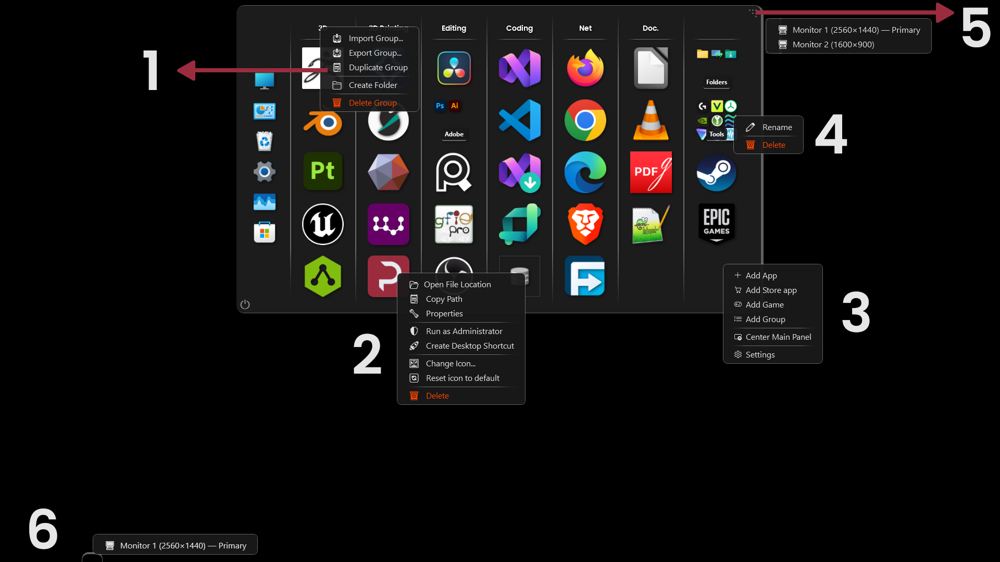
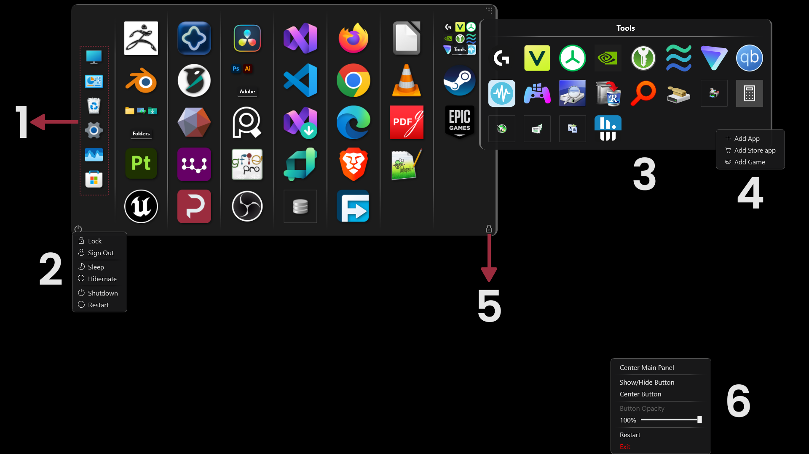
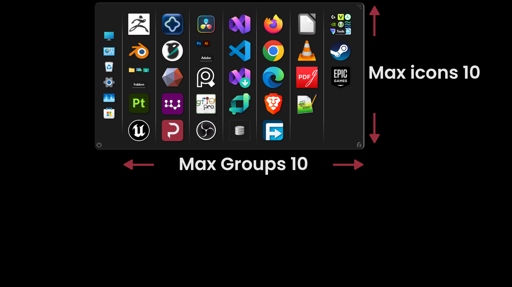

Deskepty — Tips & Tricks
Version 3.4.0
- Right-click a group title — import / export, duplicate, create folder, delete.
- Right-click any icon — the menu changes with the icon type: .exe app, folder, Microsoft Store app, and more.
- Right-click empty space — the main menu.
- Right-click a sub folder — rename or delete.
- Hold the dots and drag to move Deskepty — or right-click to pick a monitor and it jumps there.
- The toggle button shows and hides Deskepty — press and hold to drag it, or right-click to pick a monitor and the button jumps too.

- System icons — add up to 12 from Settings.
- Power options — everything you need, one click away.
- A sub folder holds up to 64 icons — drag icons inside the popup to organize, right-click them for more options.
- Right-click empty space inside a sub folder — add apps, Store apps and games straight into it.
- Lock — keeps Deskepty on screen while you organize or drag apps in from Explorer.
- The tray icon menu — show / hide and center the toggle button, adjust its opacity — plus center main panel, restart and exit.

Hidden tricks
CtrlRight-clickquick delete an icon
CtrlZundo icon deletions
CtrlDragan icon onto another to create a sub folder — or right-click a group title, Create Folder
AltDragan icon onto another to swap them between groups
ShiftDragan icon out of a sub folder and drop it into a group
Dragapps or folders from Explorer straight into a sub folder
Middle-clickrun an app as administrator
CtrlScrollon the main window — resize icons, 60 to 128